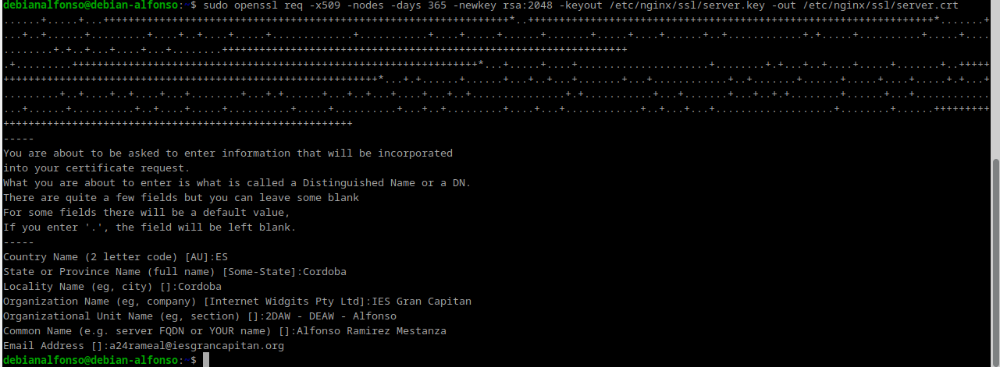
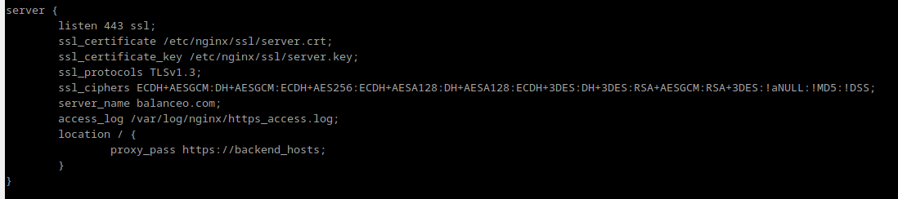
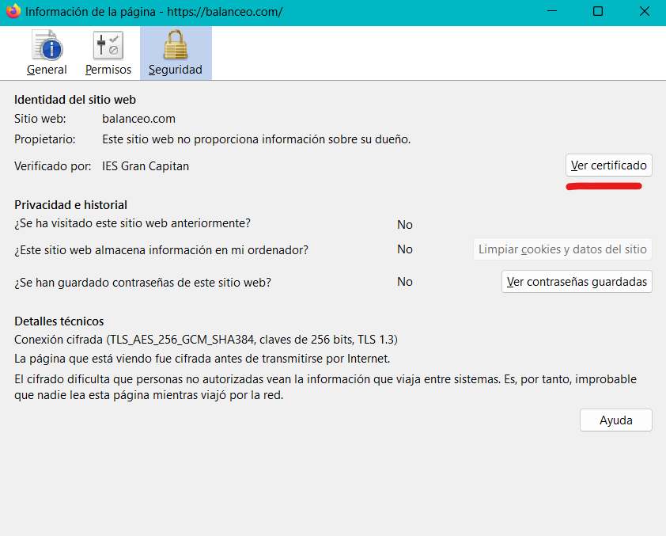

Práctica2.5.- Proxy Inverso y Balanceo de carga con SSL en NGINX
1.- Introducción
En esta práctica usaremos nuestro balanceador de la práctica anterior y además le añadiremos cifrado SSL para mayor seguridad y así, asegurarnos que, cuando entramos en el sitio web nos presente un cértificado digital para asegurarnos que es quien dice ser.

2.- Tarea
2.1.- Creación del certificado autofirmado
Para crear nuestro certificado y las claves asociadas a ellos, tanto privada como pública y para ello empezamos creando el directorio /etc/nginx/ssl.

Cuando ya hayamos creado el directorio crearemos una clave pública, donde:
openssles la herramienta para crear y administrar certificados y claves.-reqgenera una solicitud de certificados y solicitudes de firma.-x509modifica el subcomando anterior diciendole que queremos crear un certificado autofirmado en lugar de una solicitud de firma.-nodesomite la opción de asegurar nuestro certificado con contraseña.-days 365establece el tiempo durante el cuál el certificado será válido.-newkey rsa: 2048especifica que queremos generar un nuevo certificado y una nueva clave al mismo tiempo.-keyouteste parámetro le dice a OpenSSL dónde colocar el archivo de clave privada generado que estamos creando.-outdice dónde se colocará el certificado que estamos creando.

En el apartado Organizational Unit Name, podremos 2DAW - DEAW - VuestroNombre.
2.2.- Configuración SSL en el proxy inverso
Modificaremos nuestro archivo que hizo de balanceo en la práctica anterior, es aquí donde realizaremos la configuración para que el sitio web se conecte mediante SSL.
Dentro del bloque server {...} cambiaremos el puerto de escucha listen 80 por lo siguiente:

3.- Comprobaciones
Cuando accedamos ahora a nuestro sitio web https://balanceo.com, nos deberá saltar un aviso de seguridad debido a que nuestro certificado es autofirmado.
Clicaremos en avanzado y avanzaremos al sitio web, seguidamente veremos como carga nuestro HTML. Lo siguiente que tendremos que hacer para verificar nuestro certificado es clicar en el candado.

Después clicamos en Conexión No Segura y después en Más Información.:

Después se abre esta ventana y clicamos en Ver Certificado:

Y aquí podremos ver todos los detalles del certificado:

Si ahora intentáis acceder a http://balanceo, ¿deberíais poder acceder? Comprobadlo y describid qué pasa y por qué.
Accederemos al sitio web por defecto de Nginx, ya que http trabaja en el puerto 80 y nosotros no tenemos un bloque creado que responda a esa petición.
4.- Redirección forzosa a HTTPS
Para redireccionar "forzosamente" una petición http a nuestro servidor https, crearemos un bloque server {...} adicional en nuestro archivo de configuración de balanceo:

Guardamos los cambios y ahora haremos un sudo unlink /etc/nginx/sites-enabled/archivoBalanceo y crearemos un nuevo enlace simbólico con sudo ln /etc/nginx/sites-available/balanceo /etc/nginx/sites-enabled y por último reiniciamos nuestro servicio de Nginx.

Haciendo esto, cuando accedamos a http://balanceo.com, automáticamente se redigirá a https://balanceo.com.
5.- Cuestiones finales
Cuestión 1.- Hemos configurado nuestro proxy inverso con todo lo que nos hace falta pero no nos funciona y da un error del tipo This site can't provide a secure connection, ERR_SSL_PROTOCOL_ERROR.
Dentro de nuestro server block tenemos esto:
server {
listen 443;
ssl_certificate /etc/nginx/ssl/enrico-berlinguer/server.crt;
ssl_certificate_key /etc/nginx/ssl/enrico-berlinguer/server.key;
ssl_protocols TLSv1.3;
ssl_ciphers ECDH+AESGCM:DH+AESGCM:ECDH+AES256:DH+AES256:ECDH+AES128:DH+AES:ECDH+3DES:DH+3DES:RSA+AESGCM:RSA+AES:RSA+3DES:!aNULL:!MD5:!DSS;
server_name enrico-berlinguer;
access_log /var/log/nginx/https_access.log;
location / {
proxy_pass http://red-party;
}
}
Respuesta
El error se encuentra en el listen, que no está escuchando que sea ssl. Se arreglaría así:
server {
listen 443;
...
}
Cuestión 2.- Imaginad que intentamos acceder a nuestro sitio web HTTPS y nos encontramos con el siguiente error: Investigad qué está pasando y como se ha de solucionar.

Respuesta
Esto significa que nuestro certificado SSL ha sido anulado. Para solucionarlo deberemos comprobar lo siguiente:
- Verificar la validez del certificado.
- Reemplazar el certificado SSL.
- Reiniciar el servidor de Nginx.
- Verificar la configuración del certificado.
- Limpiar la caché del navegador.